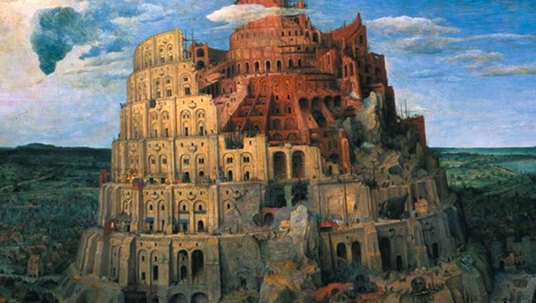

When we were in junior high school, my friend Rich and I made a map of the school lunch tables according to popularity. This was easy to do, because kids only ate lunch with others of about the same popularity. We graded them from A to E. A tables were full of football players and cheerleaders and so on. E tables contained the kids with mild cases of Down’s Syndrome, what in the language of the time we called “retards.”
We sat at a D table, as low as you could get without looking physically different. We were not being especially candid to grade ourselves as D. It would have taken a deliberate lie to say otherwise. Everyone in the school knew exactly how popular everyone else was, including us.
I know a lot of people who were nerds in school, and they all tell the same story: there is a strong correlation between being smart and being a nerd, and an even stronger inverse correlation between being a nerd and being popular. Being smart seems to make you unpopular.
Why? To someone in school now, that may seem an odd ques- tion to ask. The mere fact is so overwhelming that it may seem strange to imagine that it could be any other way. But it could. Being smart doesn’t make you an outcast in elementary school. Nor does it harm you in the real world.